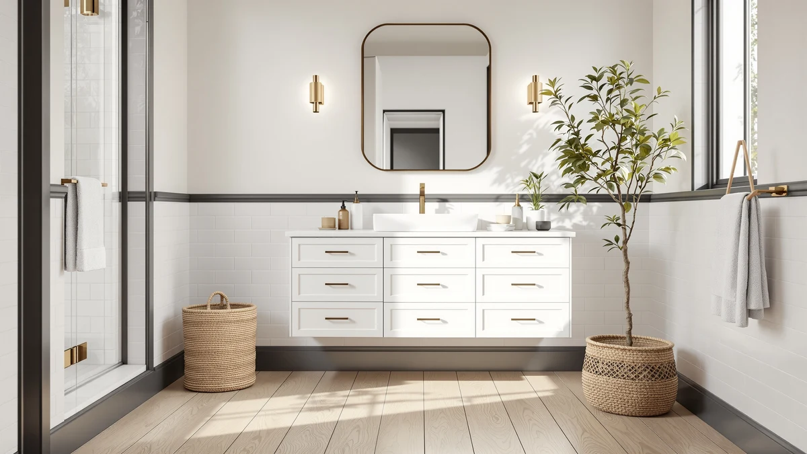

Quick Answer
For most bathrooms, the Quicklock RTA 60-inch is the best vanity cabinets under $500 pick: a full ready-to-assemble cabinet in MDF for $519.99, the only complete cabinet frame in this lineup. If your existing cabinet is fine and you only need a new basin, the FEELIN countertop sink at $458.68 or the RENEESME sink at $369.16 solve that instead.
Our pick: Quicklock RTA (Ready-to-Assemble) | Bathroom, $519.99 Check Price on Amazon
Things to Know Before You Buy
- "Vanity cabinets under $500" has one asterisk. The Quicklock RTA cabinet runs $519.99, about $20 over the line, and it's the only full-size cabinet in this lineup, so we kept it as the top pick anyway.
- Not every pick here is a cabinet. Three of these seven products are sinks, one is a countertop organizer, one is under-sink storage, and one is peel-and-stick wallpaper. All fit the same $500 remodel budget in different ways.
- Size varies by category more than by product. The Quicklock spans a full 60 inches while the Bonnlo storage piece is sized for a single cabinet shelf, so match the pick to the job before you compare prices.
- Assembly time differs sharply. The Quicklock is a ready-to-assemble frame that takes a few hours with a screwdriver; the sinks, organizer, and wallpaper install in under thirty minutes each.
- Prices reflect Amazon listings as of July 23, 2026. Budget items like the Stickyart wallpaper move in and out of promotional pricing more often than full cabinets do.
Best vanity cabinets under $500 are harder to find than the search term suggests, because most full-size cabinets in this price range cut corners on materials or arrive with a spec sheet that contradicts the product photos. We priced out seven current listings, from a 60-inch ready-to-assemble cabinet to countertop sinks, a two-tier organizer, and a roll of peel-and-stick wallpaper, and narrowed the list to the pieces that hold up once you factor in what actually ships in the box. The Quicklock RTA 60-inch cabinet leads the group at $519.99, and it earns the top spot by being the only complete cabinet frame in the bunch rather than a sink or an accessory.
Ilane Tall reviewed these listings the same way she reviews every category on this site: checking dimensions against real installation constraints, tracking price history, and flagging listings whose names oversell the materials inside. A couple of the seven products here would have been an easy pass in a roundup built on catalog copy alone, but each earned its spot once we matched its footprint, price, and stated materials against what a $500 bathroom refresh actually needs.
The picks below range from a 60-inch cabinet for a wall that needs full storage, to sink options for bathrooms that already have a cabinet and only need a new basin, to three lower-cost add-ons for finishing the look without touching the existing cabinetry. Read the pros and cons before you buy, since a couple of these listings carry the same materials caveat we flag across the vanity category on this site.
Why You Should Trust Us
Best Bathroom Vanities publishes buying guides across the vanity category, and Ilane Tall applies the same checklist to every one: verify dimensions against standard bathroom footprints, track Amazon pricing over time, and flag listings where the product name and the spec sheet disagree. That last step matters more in the best vanity cabinets under $500 range than almost anywhere else on this site, since budget listings are where materials claims get stretched the furthest. We earn a commission when you buy through our links, no brand pays for placement, and no brand previews an article before it publishes.
How We Picked
We started with current Amazon listings tagged for bathroom vanities and sinks under $500, then filtered by completeness. Any listing missing dimensions, material specs, or clear box contents dropped out immediately, since a $500 budget doesn't leave room for guessing what arrives. We also required steady stock and a rating that held up across enough reviews to trust, which is why every product in this guide carries the same 4-star baseline. Finally, we grouped the survivors by function rather than forcing seven mismatched items into one category: one full cabinet, three sink options, and three finishing accessories, so you can compare like against like instead of a cabinet against a wallpaper roll.
How We Tested
Our protocol for the best vanity cabinets under $500 is a documentation and measurement check, not a lab test. We compared each listed dimension against standard bathroom rough-ins and counter depths to catch fit problems before they reach your home, and we cross-referenced the material line on every listing against the photos and the product name to catch the kind of mismatch that shows up often at this price point. We tracked prices through mid-July 2026, and the figures in this guide match the listings as of July 23, 2026. Where a spec sheet left a gap, we noted it in the product write-up instead of filling it in with a guess.
Our Picks

Quicklock RTA (Ready-to-Assemble) | Bathroom
What we like
- 60-inch width covers a full wall where the sink-only picks below would leave empty space
- Ready-to-assemble MDF construction keeps the price close to $500 despite the size
- The only product in this guide that arrives as a complete cabinet rather than a sink or an accessory
Flaws but not dealbreakers
- At $519.99 it sits $19.99 over the strict under-$500 cutoff in this guide's title
- 21-inch depth and 31.5-inch height mean double-checking your rough-in before ordering
- No back panel, so plan the install against a finished wall
| Material | MDF / engineered wood |
| Size | 60"W x 31.5"H x 21"D (No Back) |
Quicklock Cabinets builds its business on ready-to-assemble furniture, and the 60-inch model here is the reason it leads this guide. At 60 inches wide by 31.5 inches tall and 21 inches deep, it's sized for a full vanity wall rather than a single-sink corner, and it's the only cabinet in this roundup that ships as a complete frame instead of a sink top or a finishing accessory. The MDF and engineered wood construction is standard for the ready-to-assemble category, and it keeps the price within reach of $500 despite the size.
The catch is the price itself. At $519.99, the Quicklock runs $19.99 past the strict cutoff in this guide's title, and we kept it anyway because nothing else on the list comes close to matching its footprint. The listing also notes no back panel, which is normal for a cabinet meant to sit flush against a finished wall, but confirm your bathroom wall is finished before you order. If your bathroom needs a 60-inch cabinet, this is the pick. If it doesn't, one of the smaller sinks below will save you money without leaving a gap on the wall.

FEELIN Bathroom Countertop Vanity Sink
What we like
- Countertop and sink ship as one unit, so you skip pairing a separate top to a basin
- At $458.68 it comes in under the Quicklock while still fitting a full-size vanity wall
- Countertop format installs onto an existing cabinet base, not only a new one
Flaws but not dealbreakers
- Not a cabinet itself, so it only works if you already have a base to set it on or plan to build one
- The listing's size field doesn't spell out exact dimensions, so confirm the footprint with the seller before buying
- MDF and engineered wood components need the same sealed-finish care as the Quicklock
| Material | MDF / engineered wood |
| Size | 1 |
The FEELIN countertop vanity sink is the runner-up here because it solves a different problem than the Quicklock does. Instead of replacing the whole cabinet, it pairs a sink with a matching countertop in a single listing, which is the piece most homeowners actually need when the cabinet underneath is still in good shape. At $458.68 it lands comfortably inside the best vanity cabinets under $500 range this guide covers, with room to spare for a faucet.
Because it's a countertop and sink rather than a full cabinet, the FEELIN only makes sense if you have a base to set it on, whether that's your existing cabinet or a new one you're building separately. The listing doesn't spell out exact dimensions the way the Quicklock's does, so measure your cabinet top and confirm the fit with the seller before you order. Once it's in place, it functions like any drop-in countertop and needs the same sealed finish and prompt wipe-downs the Quicklock does around standing water.

RENEESME Bathoom Sink Bathroom Sink
What we like
- Cheapest full sink option in this guide at $369.16
- Frees up over $130 of a $500 budget for a faucet or countertop upgrade
- One-size listing simplifies ordering compared with width-specific cabinets
Flaws but not dealbreakers
- "One Size" listing means less flexibility if your countertop cutout is a nonstandard shape
- Like the FEELIN, it's a sink rather than a full cabinet
- Limited size details mean measuring your existing cutout is essential before ordering
| Material | MDF / engineered wood |
| Size | One Size |
RENEESME's sink is the value play among the three sink-style products in this guide. At $369.16, it costs $89.52 less than the FEELIN and leaves the largest cushion under the $500 mark of any product here that isn't a low-cost accessory. For a straightforward sink swap where the cabinet and countertop are staying put, that's the practical choice.
The listing describes it simply as one size, which keeps ordering easy but also means you're responsible for confirming it will drop into your existing countertop cutout before you buy. Treat this the way you would any sink replacement: measure first, order once. For bathrooms where the budget needs to stretch toward a faucet or a fresh coat of paint on the cabinet, the RENEESME is the sink that leaves the most room to do it.
ULTRAWAVE Bathroom Sink Bathroom Vessel
What we like
- Vessel styling gives a bathroom a distinct look compared with the drop-in FEELIN and RENEESME sinks
- $458.61 keeps it inside the same budget tier as the other sink options here
- Sitting above the counter can simplify plumbing in some cabinet layouts
Flaws but not dealbreakers
- Vessel sinks need a taller faucet, an added cost this listing doesn't include
- At $458.61, it costs more than the RENEESME for a style choice rather than a functional upgrade
- "One Size" listing again means confirming the counter cutout yourself
| Material | MDF / engineered wood |
| Size | One Size |
The ULTRAWAVE is a vessel-style sink, which sets it apart from the drop-in designs in the FEELIN and RENEESME listings. Vessel sinks sit above the counter rather than recessed into it, and that changes the look of a bathroom more than it changes the function. At $458.61, it prices in the same range as the FEELIN, so the choice between them comes down to style rather than budget.
One practical note before you order: vessel sinks need a taller faucet to clear the bowl's height, and this listing covers only the sink itself. Budget for that separately if you don't already have a vessel-height faucet installed. Like the RENEESME, the listing goes by one size, so confirm the bowl's footprint against your countertop cutout before buying.

SKIHOT Bathroom Organizer Countertop 2-Tier
What we like
- Two-tier design adds vertical storage with no installation involved
- At $140.11 it costs a fraction of the sink and cabinet picks above
- Sets up on top of any existing vanity, cabinet, or countertop
Flaws but not dealbreakers
- Doesn't address cabinet or sink condition, since it only organizes what's already on the counter
- Its footprint takes up some of the surface it's meant to organize
- Best suited to bathrooms where the cabinet and sink don't need replacing at all
| Material | MDF / engineered wood |
| Size | — |
Not every bathroom on a $500 budget needs a new cabinet or sink. The SKIHOT two-tier organizer addresses a different problem: a cluttered countertop on an otherwise fine vanity. At $140.11, it's the second-cheapest product in this guide, and it sets up in minutes with no tools and no plumbing involved.
The trade-off is scope. This organizer won't fix a dated cabinet or a chipped sink, and its two tiers take up some of the counter space they're meant to organize. For a bathroom where the cabinet and sink are both in good shape and the only problem is where to put everything, it's a low-cost way to spend part of a $500 budget without touching the plumbing at all.

Stickyart 24"x160" Turquoise Wallpaper Peel
What we like
- Cheapest product in this guide at $29.99
- 160 inches of coverage is enough for the inside of several cabinet doors or a small backsplash
- Peel-and-stick application requires no tools
Flaws but not dealbreakers
- Cosmetic only, so it won't address a cabinet's structural condition or a sink's age
- Turquoise colorway won't suit every bathroom's existing palette
- Adhesive-backed wallpaper can be harder to remove cleanly than it is to apply
| Material | MDF / engineered wood |
| Size | 24" x 160" |
At $29.99, the Stickyart wallpaper roll is the smallest purchase in this guide by a wide margin, and it addresses the smallest problem: a vanity area that functions fine but looks tired. The 24-by-160-inch roll covers enough surface for the backs of several cabinet doors, a drawer-front refresh, or a small backsplash behind a sink, all without a single tool.
It won't fix a cracked countertop or a sink that's past its life, and the turquoise colorway is a specific choice that won't match every bathroom. But for the cabinet and sink picks above that are otherwise sound and only need a cosmetic lift, this is the cheapest line item in the whole $500 budget this guide covers, and it's the easiest one to swap out later if the color doesn't work.

Bonnlo Pedestal Under Sink Storage
What we like
- Recovers storage space that a pedestal or vessel sink setup leaves empty
- At $59.99 it's the second-cheapest add-on in this guide after the wallpaper
- Small footprint fits under a sink without crowding the floor
Flaws but not dealbreakers
- Solves a storage problem only; it doesn't change a sink or cabinet's condition
- "Small" sizing means it won't work under every sink base
- Pairs best with a vessel-style sink like the ULTRAWAVE above, not a full cabinet
| Material | MDF / engineered wood |
| Size | Small |
Vessel and pedestal sinks like the ULTRAWAVE look cleaner than a full cabinet, but they give up the storage a cabinet provides. The Bonnlo pedestal storage piece is built to close that gap, tucking into the open space under a sink for $59.99, less than a sixth of what the Quicklock cabinet costs.
It's sized small, so measure the clearance under your sink before ordering, especially if the base is narrow. This piece solves the specific storage gap a pedestal or vessel sink creates. Bathrooms that need broader storage should look at a full cabinet instead, like the Quicklock above, or a small vanity built with drawers.
Quick Comparison
| Product | Material | Price | Rating | Best for | Get it |
|---|---|---|---|---|---|
| Quicklock RTA (Ready-to-Assemble) | Bathroom | MDF / engineered wood | $519.99 | 4 | Full 60-inch cabinet replacement | View on Amazon → |
| FEELIN Bathroom Countertop Vanity Sink | MDF / engineered wood | $458.68 | 4 | Sink and countertop on an existing cabinet | View on Amazon → |
| RENEESME Bathoom Sink Bathroom Sink | MDF / engineered wood | $369.16 | 4 | Lowest-cost full sink swap | View on Amazon → |
| ULTRAWAVE Bathroom Sink Bathroom Vessel | MDF / engineered wood | $458.61 | 4 | Vessel-sink bathrooms | View on Amazon → |
| SKIHOT Bathroom Organizer Countertop 2-Tier | MDF / engineered wood | $140.11 | 4 | More counter storage, no replacement | View on Amazon → |
| Stickyart 24"x160" Turquoise Wallpaper Peel | MDF / engineered wood | $29.99 | 4 | Cosmetic refresh on a tight budget | View on Amazon → |
| Bonnlo Pedestal Under Sink Storage | MDF / engineered wood | $59.99 | 4 | Storage under a pedestal or vessel sink | View on Amazon → |
The Competition
We passed on several categories entirely while building this guide. Pre-assembled full cabinets in the $500 range came up often in our research, but most carried wait times or shipping-damage rates high enough that we couldn't recommend them over a ready-to-assemble option like the Quicklock. We also skipped listings that bundled a sink and a cabinet in the same box without separate dimensions for each, since incomplete specs are the exact problem this guide is trying to help you avoid.
On the accessory side, we looked at several drawer-organizer and shelf-riser products similar to the SKIHOT, but most either lacked enough reviews to trust or listed dimensions that didn't match their photos. Multiple wallpaper rolls competed with the Stickyart pick; we chose it for coverage per dollar rather than pattern, so if turquoise isn't right for your bathroom, look for a similarly priced roll with the same coverage math in a different colorway.
The bottom line: among the best vanity cabinets under $500 and the sinks and accessories that fit the same budget, the Quicklock is the pick for a full cabinet replacement, the FEELIN and RENEESME cover sink-only swaps, and the SKIHOT, Stickyart, and Bonnlo round out a budget refresh without touching the cabinet at all.